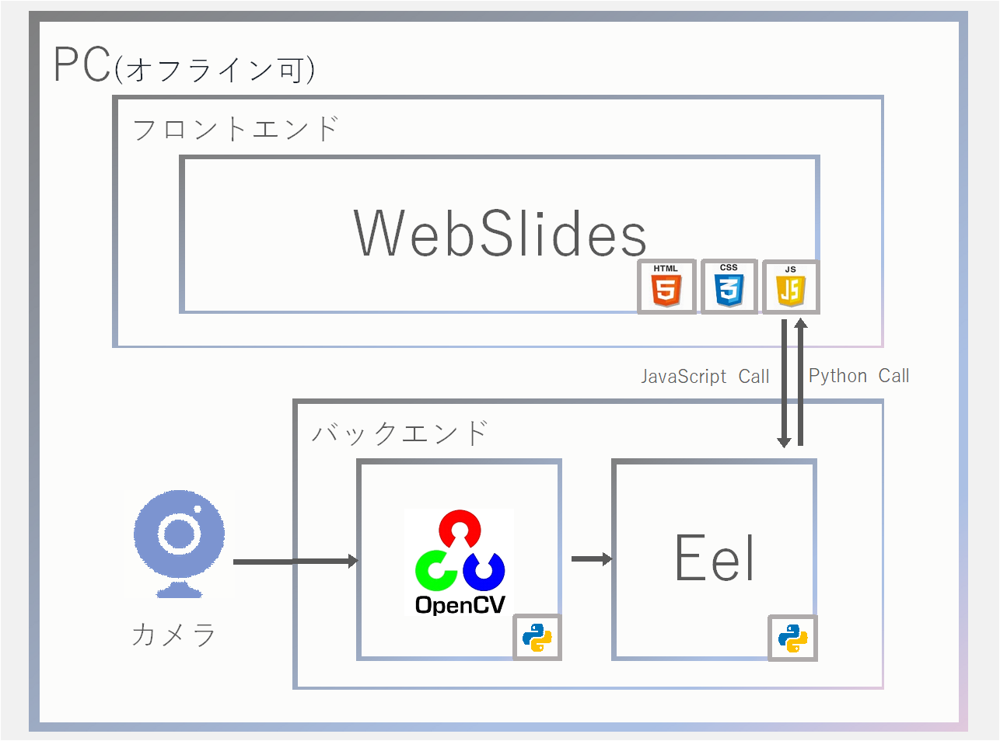
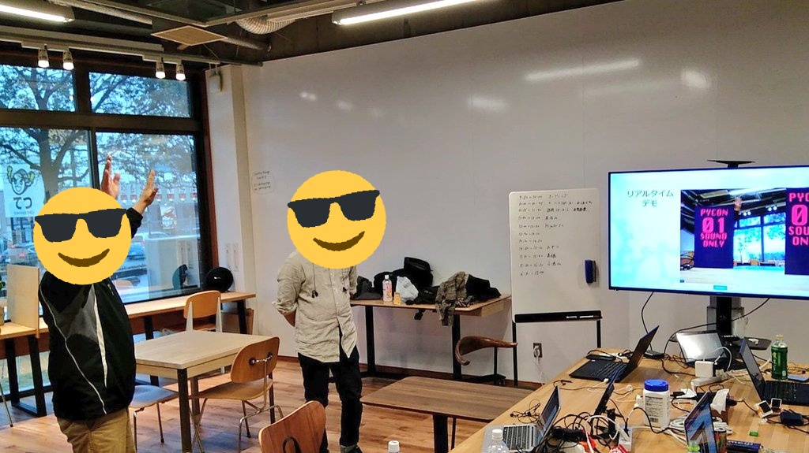

PyCon mini Shizuokaで
オンライン発表してきました
Python東海 2020/3/7(土)
お前、誰よ？
名前：高橋かずひと
Python歴：そろそろ5年？
Twitter：@KzhtTkhs
お仕事：組込、画像処理、
：IoT、Webアプリなど
その他、個人の活動で、インディーゲーム制作のお手伝をしています。
最近はディープラーニング(主に物体検出)やＡＲでよく遊んでいます。
何を発表してきたの？
「EeLとWebSlidesで一味違う画像処理のプレゼン」
と言うタイトルで発表してきました😀
Pycon mini Shizuokaのテーマ:「あなたの知らないPython」

こんな感じのデモを
発表してきました。
スライド中に
リアルタイムデモを
埋め込んでいます。

システム構成 概要
System architecture overview
WebSlides：1.5.0
OpenCV：4.1.2
Eel：0.11.0
Webカメラ
import eel import cv2 as cv import base64 cap = cv.VideoCapture(0) # EeLフォルダ設定、および起動 eel.init('webslides') eel.start('index.html', mode='chrome', block=False) while True: eel.sleep(0.01) # カメラキャプチャ ret, frame = cap.read() if not ret: continue # UI側へ渡す _, imencode_image = cv.imencode('.jpg', draw_image) base64_image = base64.b64encode(imencode_image) eel.set_base64image("data:image/jpg;base64," + base64_image.decode("ascii"))
なんと、たったコレだけの行数で実現できました🙃
つまり🤢
超時間余った🤮
30分の発表時間中、20分で完走🏃！
いや、言い訳すると聞いている方の反応を見て
問いかけたり、ボケたりするネタとか
EelのTips的の紹介なの考えてたのですけど、、、
発表直前でマイクがONにならないトラブルがあって頭からネタが消失したorz
※リハでは毎回25分強くらい
